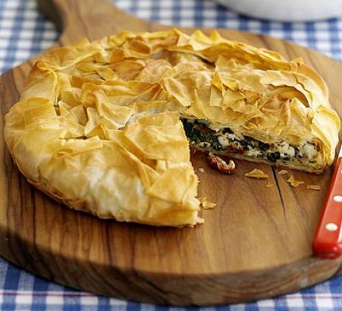

A crispy pie that you can adapt for your needs, add chicken or keep it veggie. A good fail-safe for your repertoire
Chicken pies: Add 1 cooked, shredded chicken breast to the spinach mixture, then oil 3 sheets of filo per portion and lay them out on top of each other. spoon a few tbsp of the mixture onto one end of each pastry stack. fold over the edges and roll up to make cigar-shaped packages. Brush with oil and cook for 15 mins or until golden and crisp..